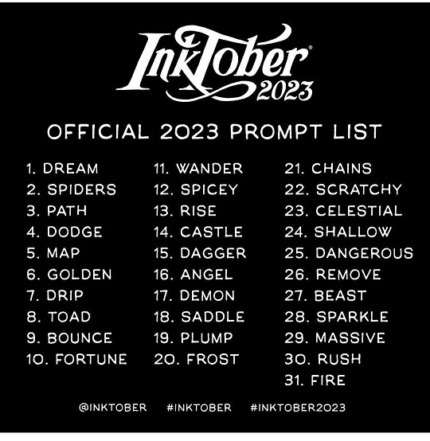

Poems that Ethan has written during October Return: Stories

Dream
My love is akin to a dream
Ethereal and divine
Quenching infernos to melancholic repose
Passion to distance
Sweet embrace to longing
A boundless sea of emotion and warmth
Your ship sails upon it
Tossed by the winds
But never ceasing
Journeying unto my shores
To be with me once more
In my unchained dreams
Still you deem
My heart esteemed
Thy kiss supreme
I am redeemed
In fervent streams
Your eyes gleam
With devotion and loving splendour
Widow
Unsuspecting, I entered your lair
You stalked me from afar and moved in for the kill
The web you weave encompasses me in a cocoon of silk
As your venom pulses through my veins.
I fall into a slumber cradled in your arms;
The corrupting embrace of death.
Submitting to your will, I am helpless to defend.
You paralyse me
I am yours
All Roads Lead To You
Through twists and turns I stride
You are my journey
My Destination
I'm on my way to you
All roads lead to you
You never escape my mind
You are my everything
My Rome
I'm on my way to you
Brother
For years I tried to hide from his rambling and his aggression,
I hid from the confusion and paranoia of his drug induced psychosis.
Now he's so far gone, he may as well be someone else.
I feel ashamed to turn away but it's all I can bear to do.
I still feel the need to dodge his visits, I'm not comfortable around him
But I don't want to lose him forever, I just want him to get better.
Teresa
I remember my nan very fondly
A stalwart symbol of wisdom
Sitting in the chair by the fire
With a newspaper and tea beside her
She'd go out and break the sticks with an axe
And tell stories of fairies and elves
She'd have dinner each day for the kids coming in
And save the last plate for herself
Her skin was a well written map
That detailed her well lived life
Her eyes though fading still gazed out
As she longed to be roaming about
A century passed before being called
To take her place at Gods right hand side
But she's always with me, she hasn't left
She's my guardian and my guide
you are too beautiful
you are too beautiful for these undeserving eyes
you, the radiant and unchained soul
you are too beautiful for my mere labourers hands;
adorned in the cuts and bruises of the seasons harvest
you are too beautiful for the sun catching tears on my cheeks
but not for the red worm that burrows through your heart
Drip
I watched the morning dew dripping
From the weeping willow while sitting
By the waves as they lapped the stony shore
And rain cracked stones with mighty roars,
Falling with such velocity,
I was incomplete
I watched the morning dew dripping
Rearing itself up into a tempest
Toad One
My lips on yours had no effect
There was nothing to unveil
I thought you were a victim
But you were the mastermind
Behind my pain
And my destruction
Toad Two
I leaned in
I prayed
Would my kiss
Restore your faith?
Bounce One
Mourning is hard
To bounce back from
When the comfort of nothingness
Is luxuriously desirable
Bounce Two
>
My heart skips a beat when you touch my hand
Somersaults of anxiety when we cuddle quietly
A kiss so fiery on skin like ivory
You're the blood in my veins I need so vitally
Being with you is paradise firsthand
Lovers Fortune
Fortunately for me
I met you
My life has become complete
Long before it reaches its end
Wandering Rose
A rose sways in the hedge
The sky above is overcast and black
Its petals are beaten wide by rain
Although I walk onward
I thoughtlessly turn my head for a final look
And I see the rose fall to the ground
A Keen Interest
You're a dangerous saint.
Powerful, but not tyrannical.
Intelligent, but not arrogant.
Kind, but not naïve.
Cunning, but reserved.
Your father taught you how to rule.
Your loyalty is not to me,
But to the land below.
Arms
Lift me up
Pull me down
Do anything you like
Except go
Nan
It was a cold December
When I bid you farewell
And I watched your soul be freed
To rise to the world above